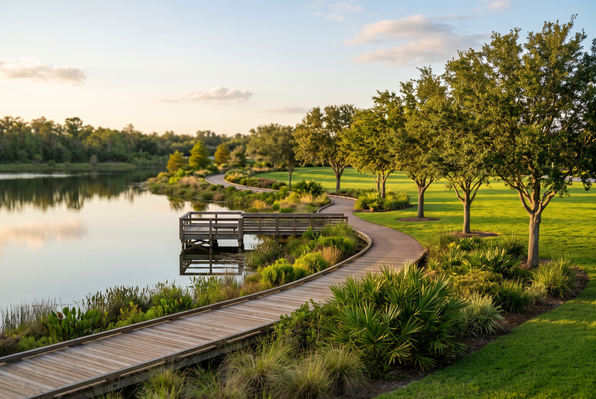
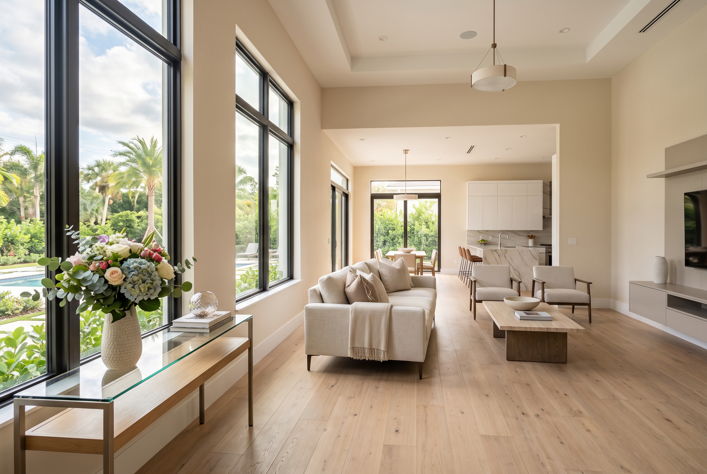
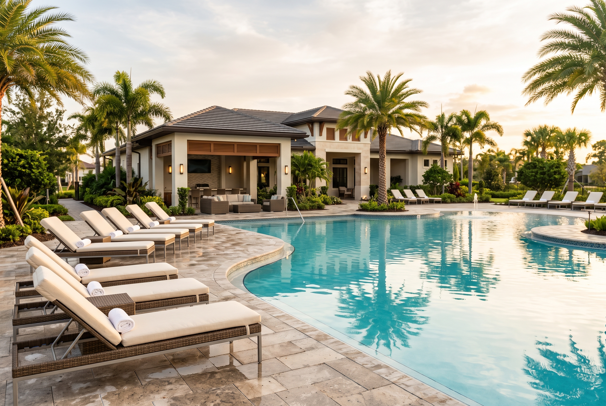

Lake Nona
Southeast Orange County, built up around Lake Nona Medical City and the USTA National Campus — closer to the airport than to downtown.
Orientation
Lake Nona sits in southeast Orange County, built up around Lake Nona Medical City and the USTA National Campus. It’s close to Orlando International Airport, not close to downtown — the drive in is real, not five minutes.
Character
Lake Nona reads as new, and parts of it are — but Northlake Park, its oldest neighborhood, opened in 1999 and is old enough to vote. Laureate Park, VillageWalk, Water’s Edge, Somerset Park and Summerdale Park filled in over the two decades since, and the community isn’t expected to finish building until around 2031. That range matters: a home in Northlake Park has mature landscaping and an established block; a home going up today doesn’t, yet.
It’s also one of the larger active master-planned communities in the country — about 17 square miles, still adding close to a thousand residents a year. HOAs run the common areas and set the rules on exteriors across nearly all of it, the trade for parks, trails, and amenity centers that come finished rather than built up over decades.

Schools
Lake Nona sits within Orange County Public Schools. Northlake Park Community School has served the area since 1999; Laureate Park Elementary opened alongside that neighborhood. Lake Nona Middle and Lake Nona High School (2009) serve much of the area at the older grades, with Innovation Middle and newer schools like Village Park Elementary covering neighborhoods built out more recently.
Zone lines split by street in a community this large, and shift as new schools open — worth checking a specific address against OCPS’s own zoning tool before assuming, not after.

Fit
Lake Nona suits someone who wants new construction, HOA-maintained grounds, and easy access to the airport and the Medical City job corridor — Nemours, the VA, UCF’s College of Medicine, KPMG’s campus among them. It doesn’t suit someone chasing mature trees, an established block, or the lowest price per square foot in the county; new, amenity-rich, and centrally planned all cost more than older stock elsewhere in Orange County.
Before you buy here
New construction is common in Lake Nona — phases are still being built out. Buying new here means buying the builder’s contract, not a resale agreement, and that’s a different document to read. HOA documents are worth reading before a contract, not after; the architectural rules run more detailed than a neighborhood with no HOA at all.
Market snapshot
- Median sale price
- $710,000
- Median days on market
- 48 days
- Year over year, price
- -11.1%
As of September 2026. Source: Redfin, trailing 3 months.
Read this carefully
These figures come from one fixed source, checked each quarter, not averaged across providers. Other public sources report different numbers for the same period — they use different boundaries (all of Lake Nona vs. a single zip code vs. one sub-neighborhood), different time windows, and different underlying data. That’s disclosed here, not smoothed over.
Market context only. Not an appraisal, and not a guarantee of price, timeline, or outcome for any specific home.

Considering Lake Nona
We’ll tell you whether it fits.
Call, or send a note, and we’ll tell you whether Lake Nona actually fits what you’re looking for — not just whether something’s available.
Direct line